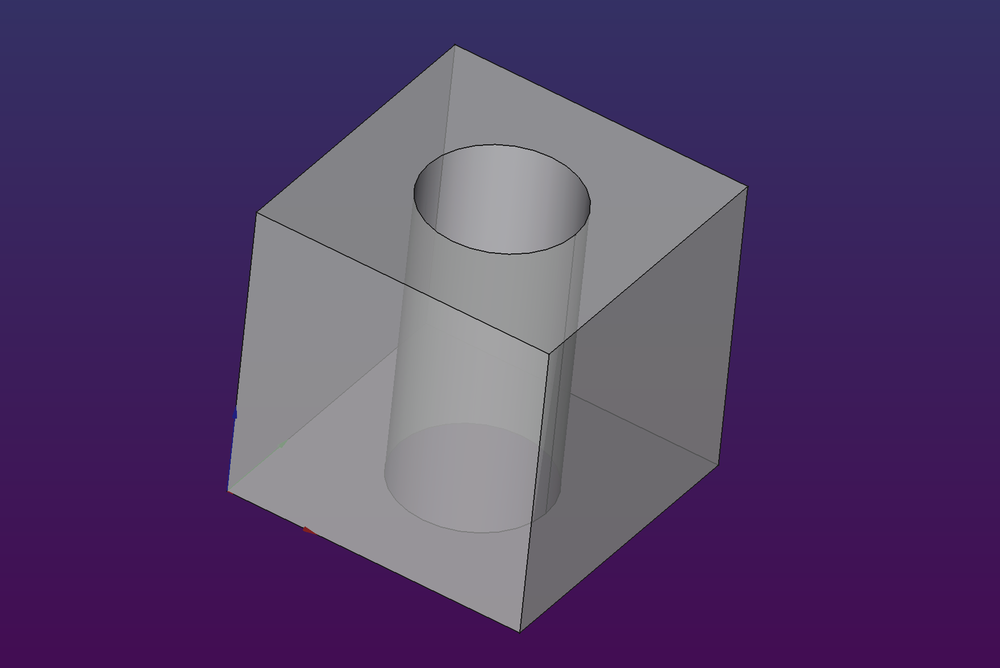

# Create a horizontal cylinder
A.make_cylinder(2, 20).rotate((1, 0, 0), -90)
Fumbler is a small library created in order to make it easier to create simple parts in FreeCAD.
The reason is exists is that so the author, a programmer, can have a good time writing code that generate things to make on a 3D printer. The reason it’s published is so that we can easily share raw shape definitions, collaborate, and adjust designs to our particular needs.
One great advantage of Fumbler is that you can freely mix and match the programmatic approach with FreeCAD edit interface. I often leverage this by creating complex boolean operations in the code (where it is faster for me) and then finishing my part with edge operations in the Part workspace (where it’s much easier to visualize).
This is the class that wraps a FreeCAD document and allows us to create new parts inside it.
Your typical Fumbler script will first create a single document
object, then use it all over the place to make new
things.
|
|  |
Don’t forget to flush at the end of your script to
refresh the UI!
You should use plot_*, draw_* or
make_* methods, depending on whether the thing you’re
creating is one, two or three-dimensional.
These are mostly used internally by draw_ methods, but
may come in handy if you want to construct a flat shape from individual
segments.
plot_line(x0, y0, x1, y1)(x0, y0) – line starting point
(x1, y1) - line ending point
Draws a straight line between two points.
plot_arc(cx, cy, r, startAngleDeg, endAngleDeg)(cx, cy) - center of the circle
r - radius of the circle
startAngleDeg – starting angle of the arc (0° being ???)
endAngleDeg – endign angle of the arc
Draws a circle arc around a center point.
draw_circle(r, cap=CircleCap.None, angle=60, name="Circle")r – radius of the circle
cap – cap method for the top part of the circle
angle – maximum overhang angle permitted
name – part name
Draws a circle with a given radius. The circle is contained in the
base plane (z=0) and the (0, 0) point is the center. You
can move and rotate the circle afterwards
CircleCap.None - draws a full circleCircleCap.Flat - draws aCircleCap.Point - drawsCircleCap.RightPoint - drawsCircleCap.LeftPoint - drawsdraw_rect()draw_rounded_rect()draw_chamfered_rect()draw_polygon()draw_cubic()make_cube()make_cylinder()make_loft()make_polyhedron()make_fuse()recompute()Recalculates the geometry inside a document after major modifications, like boolean or edge operations. Used internally in all such methods, so in most cases you don’t need to worry about recomputing yourself. But it’s here if you do things manually and things go awry.
flush()Refreshes the UI and ensures the contents of the document are
visible. Remember to flush at the end of your script!
remove_and_clean(part)Removes a part and all its descendants from the document.
The reason this is a bit tricky is that some operations (i.e. chamfer
and fillet) require the original shape to remain in the document as a
linked object. If we simply removed the part we want, these leftovers
would linger in the document tree and pollute the element browser. The
remove_and_clean method gets rid of all such potential
ghosts.
This class wraps a FreeCAD Part object and makes it easier to manipulate it
move(delta)Moves the part by specified vector.
# Create a cube with base centered on the base plane.
A.make_cube(10, 10, 10).move((-5, -5, 0))elevate(dz)Shorthand for move((0, 0, dz)), moves the part on the z
axis only.
Most useful when distributing slices for the make_loft
method.
rotate(axis, angle)Rotates the element around specified axis.
|
|
fuse()cut()intersect()chamfer()fillet()remove_and_clean()rename(name)recolor(color, transparency)hide()epsilonDefined as 0.001 or similarly imperceptible number, it’s
a handy constant you can use if you need to slightly shift two shapes
before performing a boolean operation.